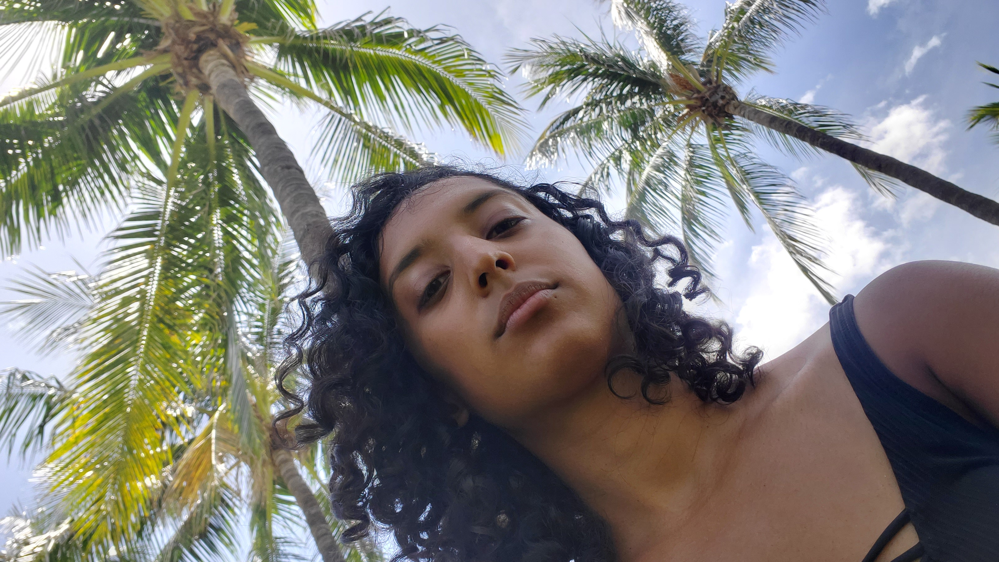
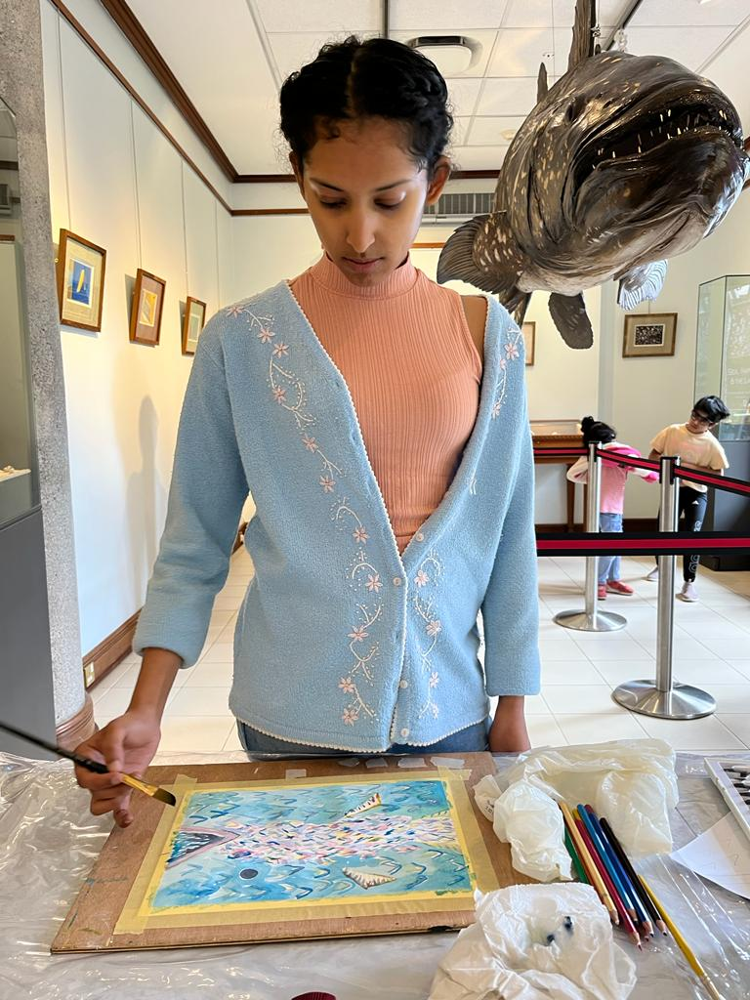

About the artist
Mauritian born and bred artist
Creating watercolour paintings inspired by life in Mauritius.

From the studio

I enjoy capturing Mauritius in all its different lights and angles: simple, beautiful, shabby, vibrant - all the good things.
There is too much that goes unnoticed in our everyday life: the tabagie on our street, an old stone church, a kitchen boasting the oldest metal and plastic. Things you may only know from being Mauritian.
So I paint what I find inspiring, from the most mundane to the grandest our island offers. Each work is an invitation to pause and notice what is there.
Start a conversation →Thoughtfully created
Made with intention,
to be cherished.
Every print begins with an original painting done by hand, and is made to order on beautifully textured, archival fine-art paper. It is carefully prepared in my Mauritius studio and wrapped without plastics.
Explore the collection →